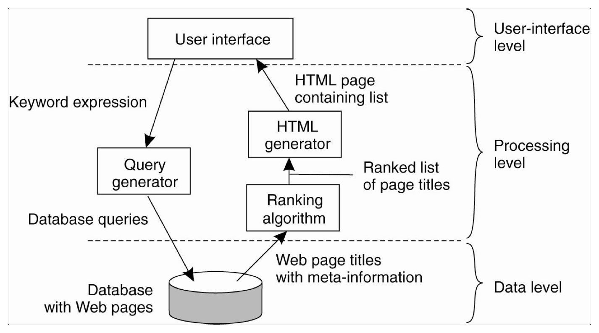
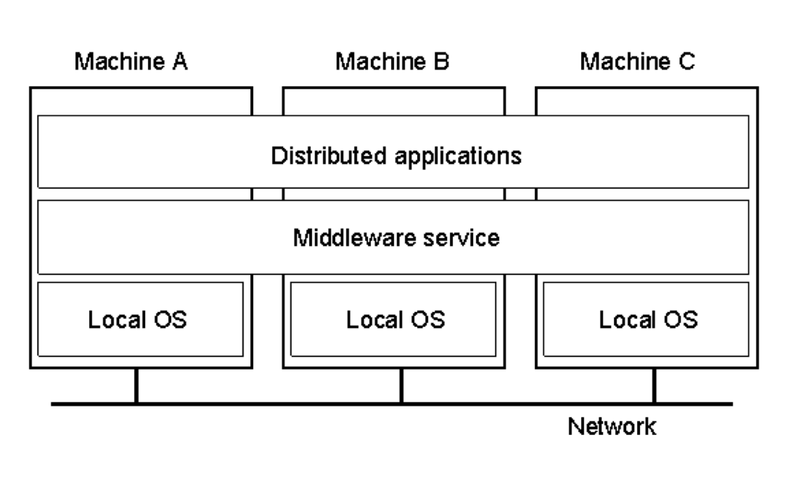
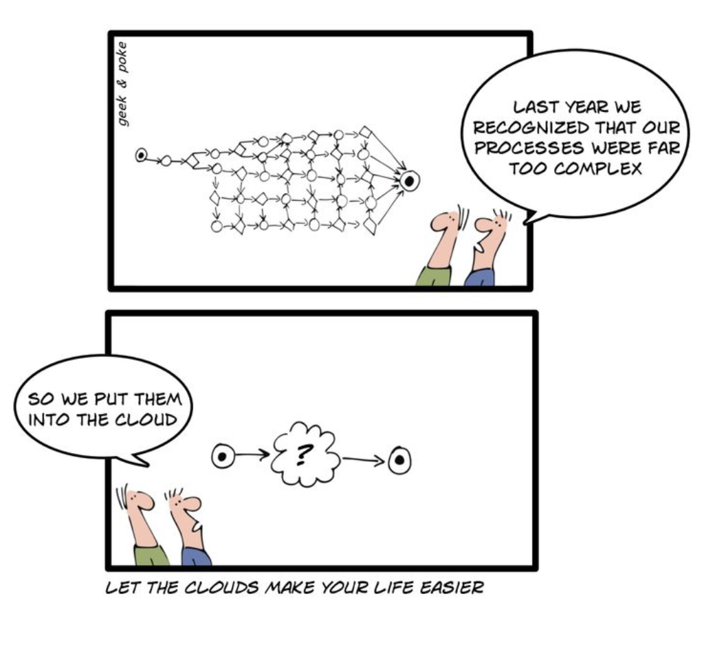
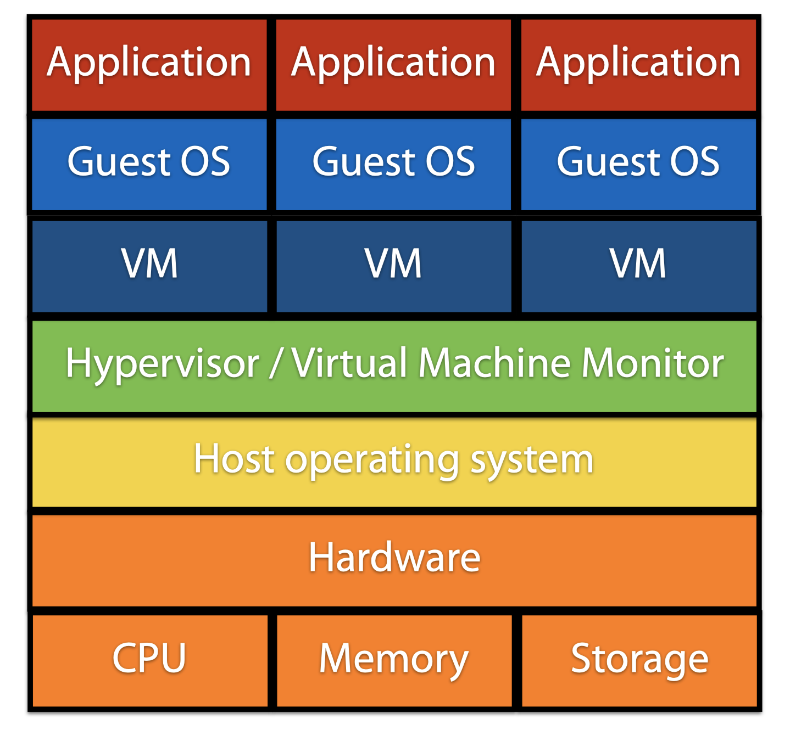
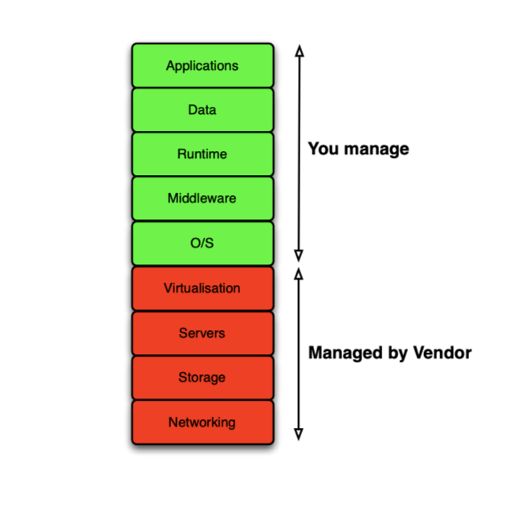
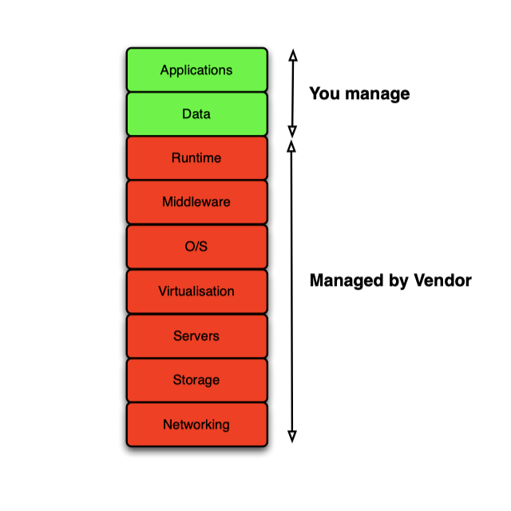
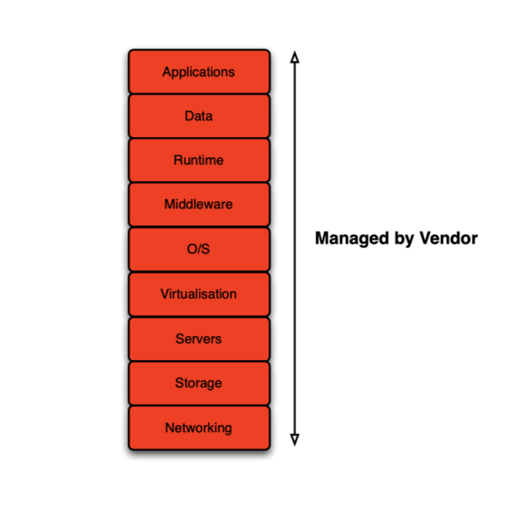

Revision Checklist
- [x] Week 1 - 2 slides
- [ ] Week 3 - 11 papers
- [x] Previous Exams
| Examinable Topics | Core Papers |
|---|---|
| Parallel Processing | 1. MapReduce 2. RDD (Resilient Distributed Datasets) 3. GFS (Google File System) |
| Storage and Databases | 4. CAP and BASE theorem 5. Amazon's Dynamo |
| Graph and Stream Processing | 6. Pregel |
| Resource Managers | 7. Google's Borg 8. Mesos |
| Cloud Engineering | 9. Performance Variation and Predictability in Public IaaS Clouds 10. HotSpot |
| Edge / Decentralised | 11. Incremental deployment and migration of geo-distributed situation awareness applications in the fog |
| Machine Learning and Systems | 12. Learning Scheduling Algorithms for Data Processing Clusters |
Distributed Systems
a collection of independent computers that appears to the user as a single coherent system.
Tanenbaum, 2006
Complex: components are autonomous and collaborative.
Design issues:
- Heterogeneity. Network/hardware/OS/languages are heterogenous; use standard protocols (HTTP)
- Openness, taken for granted at networking level but not universal at component level; determines whether the system can be extended or re-implemented in various ways; new resource sharing service can be added by clients; key interfaces published; uniform communication mechanisms;
- Security, might be mutually incompatible security policies, more ways of being attacked comparing to centralised systems;
- Scalability, size (add more resource), distribution (geo-disperse without degrading), manageability. Scaling up (upgrade resources), scaling out (add new). Techniques: hiding latency (avoid blocking on remote), distribution, replication
- Failure handling; usually partial, detection difficult and can cascade; must provide high degree of availability. Techniques: detecting/masking failures (retransmitting), design tolerating client, recovery policy, redundancy (database replication)
- Transparency, ideally user not aware distribution, practically impossible (parts are independently managed and network latency); usually make users aware so that can cope with problems (node crash); Types: hide access/location/migration/replication/concurrency/failure/scaling
- Quality of Service, reflects the system's ability to deliver services reliably with a response time/throughput acceptable to users. (e.g. if quality falls then sound/video so degraded that impossible to understand)
Centralised (2-tier) and Decentralised (N-tier/P2P) distributed computing systems - Homogeneous Cluster computing: largly the same, physically close, highly connected, ONE admin domain - Heterogeneous Grid computing: no assumptions about hardware/OS/network, MULTIPLE domains - Cloud computing: elastic capacity, pay-per-use, on-demand self service, resources are virtualised
Structure of Distributed Systems
The structure of distributed systems top to bottom:
- Applications/Services
- Middleware
- Operating System
- Computer and Network Hardware
Application/Service (Layer 1) has client-server architecture. A server for a distributed database may act as a client, forwarding requests to different file servers. Three levels: UI, processing, data.

In a 2-tier client-server (centralised) architecture, singple logical server mounting indefinite number of clients. - Thin-client model, only presentation layer implemented on client, all others on server. - simple to deploy and manage the clients - heavy processing load on both server and network - Fat-client model, some/all of the application processing is locally executed on client. - suitable when the capabilities of client system are known in advance - more complex than thin, expecially for management of new clients - less network traffic - new versions have to be installed on all clients
In a Multi-tier client-server (decentralised: vertical distribution) architecture, seperate processes execute on different physical machines/servers. Alleviate problems with scalability, potentially offer higher performance.
In a peer-to-peer (decentralised: hotizontal distribution) architecture, seperate shares of a complete set of data are operated on several logically-equivalent clients/servers. - Attr: processes on peers are all equal; interactions are symmetric; each process acts as both client and server - PRO: Resilience; Scalability - CON: no-one's in charge; each peer only knows limited info
Middleware (Layer 2) is the software that provides useful building blocks, manages the diverse components (involving diff lang/processors/protocols) and ensure they can communicate and exchange data.

OS and hardware (Layer 3 & 4) are platform.
Some trivial points: - Virtual Machine: VMWare, XenSource - Vittual Storage: GFS, HDFS - Big data: high-volume, high-velocity, high-variaty; must be converted to knowledge and understanding in order to stimulate scientific discoveries, industry innovations and economic growth.
Cloud Computing

To developers: - no upfront infrastructure investment - reduced operating costs through utility pricing - elastic on-demand architecture - high service availability - ease of use
To providers: - exploit existing data-centre capacity - take advantage of economies of scale (available to purchasers of extremely large volumes of hardware and network capacity)
Enabled technologies: - Virtualization: abstract physical infrastructure, isolated guest OS co-existing on the same computer (see figure below) - Virtual storage: GFS, HDFS - Service-Oriented Architecture (SOA): REpresentational State Transfer(REST); develop applications using existing services, make applications available as services or both - Tight Coupling: components difficult to understand in isolation, have many interdependency, difficult to maintain and re-use, cascade changes - Loose Coupling: components independent; easier maintainance and re-use - Ultility Computing: pay-per-use, on-demand

Different types of cloud: - IaaS (infrastructure), Amazon Web Services - deliver raw computer infrastructure - vendors manage networking, hard drives, OS etc.
- ** PaaS** (platform), Microsoft Azure
- deliver an application framework
- hosted framework user can built applications on
- ** SaaS** (software), Google Mail
- deliver applications as a service
  
Terminology - Machine Images: a template that contains software configuration - Instances: different instance types are essentially different hardware archetype - Regions: geo areas of the world which instances can be deployed in, each region contains multiple Availability Zones (AZ), low latency network within the same region - Elastic Compute Cloud (EC2): a service providing resizable computing capacity in Amazon's data centres - Simple Storage Service (S3): Internet storage, REST and SOAP interfaces for app dev - Glacier: low-cost storage service, optimized for infrequently accessed data, e.g. retrievsl times of several hours (achiving research/scientific data etc.) - Metrics: CPU utilization, latency, request counts. Some custom app/sys metrics: memory usage, transaction volume, error rate
Cloud vendors commonly provide Software Development Kit (SDK) for different languages, hide low-levels from end-users with abstract interface.
Summary Cloud Computing provides resizable computing capacity that enables users to build and host applications in a data centre. - computing as a utility - elastic capacity - pay-per-use - self service interface - resources virtualized
评论